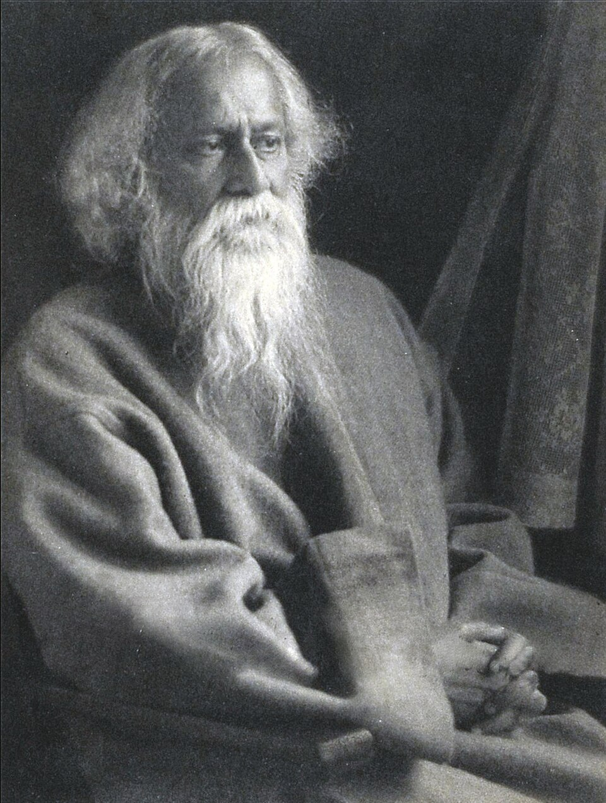

.Tagore [1861-1941].
Tagore - Calcutta - chiếc cầu Howrah
Calcutta, thành phố ánh sáng, thành phố nghèo khổ, thành phố nghệ thuật, thùng rác của thế giới… Tagore [1861-1941] đã sinh ra ở đấy, trong cái thành phố thật kinh khủng và thật tuyệt vời biết mấy này. Rabindranath Tagore ghét bỏ Calcutta giống như Freud ghét bỏ thành Vienne. Mơ đến việc rời bỏ nó, nhưng lại không thể bỏ qua nó. Và ông đã qua đời ở đấy năm 1941. Sau bao lần đi chu du khắp hành tinh, và người dân Calcutta nhặt tro thi hài của ông trên đống than còn nóng rồi thả xuống dòng nước sông Hằng.
Cách đây mấy năm, bộ phim của Sylvain Roumette đã hé mở cái nhìn kỳ diệu về Tagore qua hình ảnh chiếc cầu Howrah của Calcutta - khoảng một triệu người đi bộ hai lần trong ngày, ra vào thành phố. Cái biểu tượng thật rõ ràng: Tagore, cũng giống như người bạn ông, nhà văn Pháp Romain Rolland, thuộc về đẳng cấp những người nối liền các tư tưởng và các nền văn hóa, người đã không mệt mỏi đi từ những bến bờ này qua những bến bờ khác, từ Đông sang Tây, và quay trở lại. Người ta gọi họ là những kẻ chèo đò ngang, nhưng còn là nhà thơ và nhà hiền triết, họ thuộc về mọi thế giới, Đông cũng như Tây, thế giới của lý trí và của kinh nghiệm, của trời và đất, của trắng và đen, của huy hoàng và tăm tối, của khoa học và thi ca, và những dấu chân của họ mở ra con đường để trao đổi, con đường của yêu thương.
Trong sự nghiệp và trong cuộc đời ông, Tagore đã nối liền mọi khía cạnh của cái nhìn thấy với sự tối tăm mờ mịt mà ở đó ẩn giấu ánh sáng của sáng tạo – nhà thơ, nhạc sĩ, họa sĩ, nhà tiên tri - và riêng mình ông đã là vở opera tổng thể, một con người toàn diện. Đối với sự toàn bích thường nhật này thì giải thưởng Nobel văn học năm 1913 chỉ là một cách khẳng định. Tâm hồn ông mang hình ảnh hình hài của ông, một vẻ đẹp huyền thoại. Dáng người cao, khuôn mặt gợi cảm và cặp mắt xanh nhìn thấy tất cả mà không dừng lại ở một điểm nào, như thể tiêu hóa đi mọi thực tại. Rabindranath Tagore hiện diện hàng ngày trong thành phố quê hương của mình. Những bức họa của ông tô điểm những bức tường của tuyến tàu điện ngầm. Trên đường phố, những người kể chuyện khơi dậy lịch sử cuộc đời ông bằng những cuốn sách tranh cùng với sự nồng nhiệt như khi kể lại các thiên sử thi Mahabharata hay Ramayana. Một nghệ sĩ lang thang kiếm sống bằng âm nhạc ca lên một bài thơ của Tagore…
Là sản phẩm thuần khiết của giới tinh hoa xứ Bengale, được giáo dưỡng trong tinh thần hợp lưu giữa Ấn độ giáo, Hồi giáo và văn minh Anh, là người con thứ 14 trong một gia đình thuộc đẳng cấp cao nhưng khoan dung mà không cố chấp, Tagore đã được lịch sử phó thác để một ngày nào đó đại diện cho Ấn độ và là tác giả của bản quốc thiều Ấn độ. Hình ảnh của ông gắn liền với những trang sử của Ấn độ hiện đại. Không chỉ đứa trẻ này có đủ những thiên bẩm mà còn được hưởng thụ một nền học vấn đủ sức để tự mình phát triển. Trong ngôi nhà lớn của cha mẹ ông, cậu bé Tagore sống ẩn dật trong một thế giới bão hòa về văn hóa và trí tuệ. Không được phép đi ra phố, cậu thả tâm hồn lang thang trên các mái nhà, khám phá thế giới phụ nữ và những khoảng chân trời mênh mông trên các sân thượng. Cậu mơ đến việc đi khắp chân trời góc biển và sau này thực sự trở thành một thuyết khách của hòa bình.
Đối với Tagore, cái phân biệt ông với những nhà tiên tri thông thường là ở chỗ nghệ thuật thực sự là con đường vương giả dẫn đến tri thức. Sự dấn thân của ông cho hòa bình, chống lại mọi hình thức dân tộc chủ nghĩa hẹp hòi, chính là kết quả tất yếu của cái nhìn nghệ sĩ của ông đối với thế giới. Về tập Thơ Dâng của ông, một sưu tập thơ khiến ông nổi tiếng ở phương Tây, André Gide, nhà văn Pháp, đã viết cho nhà thơ Saint-John Perse: “Người ta muốn được khiêm nhường trước mặt ông như ông khiêm nhường trước Thượng Đế”. Trước hết, muốn trở thành nhà thơ, Tagore tự tỏ ra là nhà tiên tri. Và ông dần dà đã trở nên như vậy bất chấp bản thân mình. Trong ngôi trường Santini - Kentan “không tường không bàn ghế”, vốn là sự sáng tạo “thế tục” lớn lao của ông, những người thừa kế ông tiếp tục hòa trộn các bản sắc dân tộc, các tôn giáo, các nền văn hóa, để làm giàu lẫn nhau, qua những chiếc cầu giao lưu. Trên dòng sông thiêng liêng những thanh dầm cầu Howrah tạo ra những khung hình thoi màu xám ánh lên dưới bầu trời đã trở thành một biểu tượng về Rabindranath Tagore.
Thơ Dâng và Ocampo - Sự tương tri vượt qua những đại dương
Đối với những người hâm mộ Tagore ở Ấn độ, cái tên Victoria Ocampo, người mà Tagore đã đến nghỉ tại nhà bà ở Achentina năm 1924 và đã đề tặng bà một trong những tập thơ của ông, từ lâu đã trở nên quen thuộc.
Sinh năm 1890 trong một gia đình danh vọng ở nước này Victoria Ocampo là một phụ nữ phi thường, bà đã nổi loạn chống lại sự hà khắc của xã hội và gia đình và trở thành người lãnh đạo cuộc đấu tranh cho nữ quyền ở Achentina. Bà còn là nhà văn, người sáng lập và giám đốc đầu tiên của tạp chí SUR, một tạp chí văn học có thế lực ở Nam Mỹ.
Từ năm 1914, ở tuổi 24, cuộc sống hôn nhân của bà đã đổ vỡ nhưng mãi đến năm 1922 bà mới được phép ly hôn để thoát ra khỏi một hoàn cảnh giả dối. Chính vào thời kỳ ấy tập Thơ Dâng đã đến tay bà qua bản dịch ra tiếng Pháp của André Gide. Ảnh hưởng của tập thơ đối với bà đã được nói lên bằng chính lời của bà: “Khi tập Thơ Dâng đến tay tôi, thật là hai lần hạnh phúc. Bởi vì khi ấy tôi đang trải qua một trong những cơn khủng hoảng mà tuổi trẻ thường cho là không có lối thoát. Tôi cảm thấy cần phải tin vào một người nào đó và người đó chỉ có thể là Thượng đế, nhưng không phải là một Thượng đế hay hằn thù, hay đòi hỏi, nhỏ nhen, dửng dưng và thiểu cận mà người ta đã hoài công dạy cho tôi thờ phụng. Tôi đã mở cuốn Thơ Dâng trong tâm trạng ấy… Thượng đế của Tagore không muốn che chở tôi khỏi bất cứ điều gì và không bận tâm đến việc lãng quên Người. Người hiểu tôi sâu sắc đến nhường nào. Là vị thần tự giấu mình và biết rằng tôi sẽ mãi mãi kiếm tìm, Người là vị thần từ bi biết rằng con đường duy nhất để đến với người là con đường tự do”.
Trong thời kỳ khủng hoảng tinh thần đó, Ocampo đọc ngấu nghiến những bài thơ và những tác phẩm khác của Tagore và hiểu rõ là mình đồng cảm với nhà thơ nhiều biết mấy. Nỗi niềm của ông với thiên nhiên và quan niệm của ông về tự do đã đánh trúng vào những tình cảm sâu lắng của Ocampo. Và quan niệm của ông về tôn giáo dường như là quan điểm duy nhất có giá trị đối với bà. Năm 1924, bà viết trên tờ La Nacion Niềm vui sướng khi đọc Rabindranath, cũng là năm Tagore đến Nam Mỹ. Mùa hè năm đó, Tagore đến Buenos Aires thì bị cảm lạnh trên tàu, thầy thuốc bắt ông phải nghỉ ngơi hoàn toàn, bỏ dở chuyến đi đến Pê-ru theo lời mời của chính phủ nước này. Nghe được tin này, Ocampo đã mời vị khách Ấn độ đến ở tại một tòa nhà đẹp và yên tĩnh ở ngoại ô nhìn xuống dòng sông Plate, và Tagore đã lưu lại đấy hai mươi ngày. Đấy là một cuộc gặp gỡ của “những người tình trong mộng”.
Mối quan hệ của họ đã nẩy nở và phát triển thành tình bạn sâu đậm. Bà tỏ ra rất kính trọng nhà thơ, cởi mở và thích thổ lộ tâm tình với ông. Về phần mình, Tagore cũng bị quyến rũ bởi sắc đẹp của người thiếu phụ vô cùng sùng bái mình. Trong một bức thư gửi Ocampo, ông viết: “Đêm qua khi tôi tỏ lời cám ơn em vì điều thường được gọi là mến khách, tôi hy vọng rằng em có thể cảm thấy điều tôi nói còn chứa nhiều ý nghĩa ở ngoài lời. Chắc em khó mà hiểu được đầy đủ cái gánh nặng của sự cô đơn mà tôi phải mang theo, cái gánh nặng đè lên cuộc đời tôi vì sự nổi tiếng bất ngờ. Giá thị trường của tôi đã lên cao còn giá trị cá nhân của tôi bị lu mờ đi. Tôi tìm cách hiểu được giá trị này với một ước muốn nhức nhối luôn bám riết lấy tôi. Điều đó chỉ có thể có được từ một tình yêu của phụ nữ và từ lâu tôi vẫn hy vọng rằng tôi xứng đáng với tình yêu ấy.
Hôm nay tôi cảm thấy rằng món quà quý báu ấy đã đến với tôi từ em, rằng em có thể quý mến tôi vì con người đích thực của tôi chứ không phải cái con người của vinh quang phù phiếm. Điều đó làm cho tôi sung sướng biết bao nhưng tôi biết mình đã đến cái đoạn đường đời khi đi qua một sa mạc, tôi cần được tiếp nước hơn bất cứ lúc nào trước đây, nhưng tôi không còn phương tiện cũng chẳng còn sức mạnh để chở nó, bởi vậy tôi chỉ có thể cám ơn vận may đã dâng hiến nó cho tôi và xin cáo biệt”.
Hai năm trước khi qua đời, ông viết: “Tôi thường mường tượng ra hình ảnh tòa nhà ven sông mà em cho chúng tôi ở giữa cảnh vật lạ kỳ với những cây xương rồng thiên hình vạn trạng, có những lúc người ta như sống giữa hòn đảo châu báu đứng trơ vơ tách biệt với đất liền của cuộc đời trước mặt mà những bản hải đồ thì mãi mãi không sao đọc được ra. Thời gian tôi sống ở Achentina là một trong những thời kỳ như vậy - Có lẽ em cũng biết rằng những ký ức về những ngày đầy ánh nắng và sự săn sóc dịu dàng đó đã tạo nên một số bài thơ của tôi, những bài thơ hay nhất, những gì thoáng qua đã được nắm bắt”.
Những bài thơ được tập hợp lại dưới cái tên Puravi (tức là khúc nhạc chiều Raga của Ấn độ và được đề tặng cho Vijaya - tên Ấn độ mà Tagore đặt cho Victoria).
Năm 1925, Puravi được xuất bản. Ngày 29/10/1925 nhà thơ viết thư cho Ocampo và gửi kèm theo một cuốn thơ tặng bà. Các bài thơ nói lên rõ ràng cảm tình của ông đối với Ocampo, nhưng dù say mê ông vẫn đủ tỉnh táo để tránh sa đà vào sự giăng mắc tình cảm quá sâu sắc. Ông cảm thấy mình có nghĩa vụ đối với Thượng đế và đất nước. Trong thư ông viết: “…Một sự lôi cuốn nào đó của trách nhiệm đã kéo tôi rời khỏi chốn ngọt ngào này cùng với nguồn thi hứng tưởng như là nhàn tản vô ích, nhưng hôm nay tôi phát hiện ra rằng trong thời gian tôi ở đấy chiếc giỏ của tôi hàng ngày đã được chất đầy những đóa hoa e lệ của thi ca đang hé nụ dưới bóng râm của những giờ phút biếng lười. Tôi có thể đảm bảo với em rằng phần lớn những đóa hoa ấy sẽ còn thắm đượm mãi, cả khi những tháp lầu của những kỳ công tốt đẹp của tôi xây cất với bao khó nhọc đã tan biến vào quên lãng. Sẽ có rất ít người biết được rằng họ phải chịu ơn em vì món quà gồm chùm thơ trữ tình này mà tôi sắp hiến dâng cho họ”.
Sau dịp đến Achentina, nhà thơ chỉ gặp lại Ocampo một lần vào năm 1930 trong cuộc triển lãm các tác phẩm hội họa của ông tại Paris. Nhưng hình ảnh bà đã in sâu vào tâm hồn ông tới mức chỉ vài tháng trước khi qua đời ông còn viết những dòng thơ cảm động về bà (tạm dịch):
Nếu chỉ một lần nữa thôiTa có thể tìm về chốn ấy
Nơi thông điệp tình yêu rộng trải
Đến từ xứ sở xa xôi
Những giấc mơ đã tàn rồi
Lại quay về nơi đó
Để rì rầm xây tổ
Chiếc tổ ấm độ nào
Những ký ức tươi vui sẽ gọi
Và làm ta tỉnh giấc ngọt ngào
Sáo này, giờ lặng hơi
Sẽ một lần tấu nữa
Trên bao lơn nàng tựa
Và dang rộng cánh tay
Đến lối dạo xuân này
Dậy mùi hương ngào ngạt
Bước chân của tĩnh mịch
Vang động giữa đêm trường
Từ mảnh đất xa xôi
Với tình yêu sâu lắng
Nàng soạn chỗ ta ngồi
Cột tình ta mãi mãi
Với những tiếng thì thào
Lời nàng ta chẳng hiểu
Chỉ mắt nói lên thôi
Cặp mắt buồn rười rượi
Cứ đánh thức ta hoài.